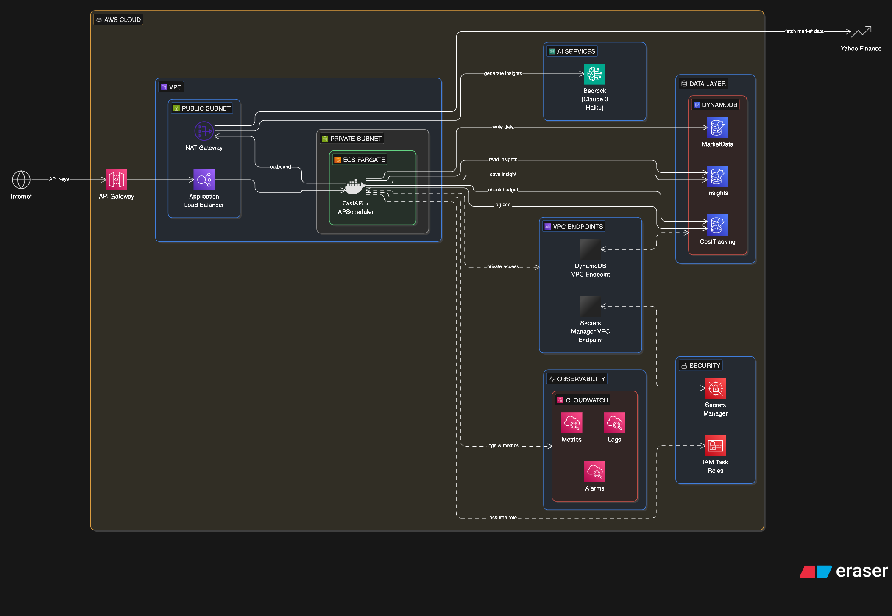

Status: Phase 8 [Institutional QMJ Screener] Complete

A multi-agent, institutional-grade financial intelligence engine. The system leverages LangGraph for stateful DAG orchestration, dbt for financial engineering (Quality Minus Junk), and AWS Bedrock for synthesized insights. Secured via sandboxed MCPs and monitored with a strict FinOps budget gate.
The architecture has evolved from a monolithic background loop to the Alpha-DAG Pivot, enabling autonomous discovery and complex multi-universe reasoning.
flowchart TB
subgraph Presentation ["Presentation Layer"]
FastAPI["FastAPI"]
Dash["Glassmorphic Dashboard"]
JS["Vanilla JS"]
end
subgraph Intelligence ["Alpha-DAG Orchestration (LangGraph)"]
direction LR
Gate["FinOps Gate\n(USD Budget Enforcement)"]
Hunter["Discovery Hunter\n(Global Ticker Filter)"]
Synth["AI Synthesis"]
Bedrock["Amazon Bedrock"]
Gate --> Hunter --> Synth --> Bedrock
end
subgraph DataLayer ["Quantitative & Data Layer"]
direction TB
MarketMCP["MCP: Market Data\n(Sandboxed Docker)"]
QuantMCP["MCP: Quant Compute\n(Sandboxed Docker)"]
DBT["dbt Pipeline\n(QMJ Z-Scores)"]
Warehouse["Analytics Warehouse\n(DuckDB -> Athena)"]
MarketMCP --> DBT --> Warehouse
end
subgraph Ingestion ["Ingestion"]
YFinance["Global Market Ingestion\n(yfinance)"]
end
subgraph AWS ["AWS Cloud Infrastructure"]
Fargate["ECS Fargate\n(prod)"]
Athena["Athena"]
CW["CloudWatch"]
DDB_Market[("Market Data")]
DDB_Insights[("Insights")]
DDB_Costs[("Cost Tracking")]
Fargate -.- Athena
Fargate -.- DDB_Market
Fargate -.- DDB_Insights
Fargate -.- DDB_Costs
end
%% Connections
YFinance -- "raw data" --> DBT
Warehouse -- "QMJ scores" --> Hunter
QuantMCP -- "QMJ scores" --> Hunter
Synth -- "insights" --> Dash
Dash -- "feedback loop" --> Gate
Gate -- "debit budget" --> DDB_Costs
Fargate -- "runs on" --> Intelligence
CW -- "observability + alarms" --> Intelligence
CW -- "observability + alarms" --> AWS
%% Styling
classDef intelligence fill:#6a4c93,color:#fff,stroke:#333,stroke-width:2px;
classDef datalayer fill:#1982c4,color:#fff,stroke:#333,stroke-width:2px;
classDef aws fill:#ff595e,color:#fff,stroke:#333,stroke-width:2px;
classDef cost fill:#ffca3a,color:#000,stroke:#333,stroke-width:2px;
classDef presentation fill:#e0e0e0,color:#000,stroke:#333,stroke-width:2px;
class Gate,Hunter,Synth,Bedrock intelligence;
class MarketMCP,QuantMCP,DBT,Warehouse,YFinance datalayer;
class Fargate,Athena,CW,DDB_Market,DDB_Insights aws;
class DDB_Costs cost;
class Presentation presentation;
flowchart TB
Internet["Internet\n(API Consumers)"] --> APIGW["API Gateway\n(HTTP API + API Key)"]
subgraph vpc [VPC]
subgraph publicSubnet [Public Subnet]
Fargate["ECS Fargate Task\n(Docker Container)\n0.5 vCPU / 1GB RAM\nassignPublicIp: ENABLED"]
end
end
APIGW -->|"VPC Link\n(Cloud Map)"| Fargate
Fargate -->|"direct outbound\nvia Internet Gateway"| YahooFinance["Yahoo Finance\n(yfinance)"]
Fargate -->|"direct outbound\nvia Internet Gateway"| Bedrock["AWS Bedrock\n(Claude Haiku)"]
Fargate --> DynamoDB["DynamoDB\n(MarketData, Insights,\nCostTracking tables)"]
Fargate -.-> SecretsManager["AWS Secrets\nManager"]
subgraph monitoring [Observability]
CWLogs["CloudWatch Logs"]
CWMetrics["CloudWatch Metrics\n+ Alarms"]
CWDashboard["FinOps Cost\nDashboard"]
end
Fargate --> CWLogs
Fargate --> CWMetrics
CWMetrics --> CWDashboardPhases 1-4 request flow:
Internet --> API Gateway --> VPC Link (Cloud Map) --> Fargate (public subnet, public IP)
|
Internet Gateway (direct)
|
Yahoo Finance / BedrockThe container runs in a public subnet with
assignPublicIp: ENABLED. It reaches external services
(Yahoo Finance, Bedrock) directly through the Internet Gateway – no NAT
Gateway needed. API Gateway connects to the Fargate task via
Cloud Map service discovery and a VPC
Link, eliminating the need for an ALB. A security group
restricts inbound traffic to only the API Gateway VPC Link.
flowchart TB
Internet2["Internet\n(API Consumers)"] --> APIGW2["API Gateway\n(API Key Auth + Throttling)"]
subgraph vpc2 [VPC]
subgraph pubSub2 [Public Subnet]
ALB2["Application\nLoad Balancer"]
NAT2["NAT Gateway"]
end
subgraph privSub2 [Private Subnet]
Fargate2["ECS Fargate Task\n(Docker Container)\n0.5 vCPU / 1GB RAM\nNo public IP"]
end
end
APIGW2 --> ALB2
ALB2 --> Fargate2
Fargate2 -->|"outbound via NAT"| NAT2
NAT2 --> YahooFinance2["Yahoo Finance"]
NAT2 --> Bedrock2["AWS Bedrock"]
Fargate2 -->|"VPC Endpoint"| DynamoDB2["DynamoDB"]
Fargate2 -.->|"VPC Endpoint"| SecretsManager2["Secrets Manager"]Phase 5 migrates the Fargate task into a private subnet with no public IP. All outbound traffic routes through the NAT Gateway. Inbound traffic enters only through the ALB, fronted by API Gateway. VPC Endpoints for DynamoDB and Secrets Manager bypass the NAT for AWS service traffic.
Development is structured into 5 tangible milestones. Phases 1-4 use a cost-effective public-subnet deployment (~$21/mo) to validate the core engine. Phase 5 adds production networking (~$72/mo).
timeline
title Project Implementation Milestones
Phase 1-5 : Infrastructure & MVP
: ECS Fargate + DynamoDB
: Bedrock Integration
: FinOps Budget Gate
Phase 6 : Alpha-DAG Pivot
: LangGraph Orchestration
: State-Aware Discovery
: Sandboxed Quant MCP
Phase 7 : Multi-Universe Ingestion
: S&P 500 + ASX Universes
: dbt Transformation Pipeline
: DuckDB Analytics Layer
Phase 8 : Institutional QMJ Screener
: Quality-Minus-Junk Metrics
: Force Refresh Engine
: UI/UX Refinement [COMPLETE]
Phase 9 : Sentiment Agent [PLANNED]
: Alternative Data (Reddit/X)
: NLP Trend Detection
Phase 10 : Portfolio & Risk [PLANNED]
: Portfolio Optimization
: Risk Parity Analysis
Goal: Establish the project structure and build the
data ingestion pipeline. Deliverables: - Dockerized
FastAPI application with APScheduler. - yfinance
integration to fetch market data and news headlines. - Local DynamoDB
integration via docker-compose. - Working
/api/v1/health and /api/v1/insights (mocked)
endpoints.
Success Criteria: Running
docker-compose up successfully spins up the API, and
periodic console logs confirm market data is being fetched and written
to local DynamoDB.
Goal: Deploy the baseline application to AWS using cost-optimized architecture. Deliverables: - CloudFormation template defining VPC (public subnets), ECS Fargate cluster, and DynamoDB tables. - IAM least-privilege roles and Secrets Manager configuration. - API Gateway configured with Cloud Map + VPC Link.
Success Criteria: The health endpoint is publicly accessible via API Gateway, and the Fargate task runs stably in AWS without NAT Gateway or ALB costs.
Goal: Connect the engine to AWS Bedrock to generate
insights while strictly enforcing daily budgets.
Deliverables: - Bedrock InvokeModel
integration (Claude 3 Haiku). - Prompt engineering for financial insight
synthesis. - Cost tracking logic querying the CostTracking
DynamoDB table before every Bedrock call.
Success Criteria: The /api/v1/insights
endpoint returns real, AI-generated summaries, and requests are
correctly blocked or mocked if the simulated daily budget limit is
reached.
Goal: Implement enterprise-grade monitoring and cost
transparency. Deliverables: - CloudWatch custom metrics
(e.g., DailyAICost, InsightsGenerated). -
CloudWatch Alarms for budget threshold breaches (80%, 100%). - A new
/api/v1/costs/dashboard endpoint returning spend
trends.
Success Criteria: CloudWatch shows active metrics for AI costs, and the API successfully returns historical tracking data for the dashboard.
Goal: Secure the application for production traffic
by removing public IP access. Deliverables: - Expanded
CloudFormation template including Private Subnets, NAT Gateway, and
Application Load Balancer (ALB). - Fargate task migrated to the private
subnet (assignPublicIp: DISABLED). - VPC Endpoints for
DynamoDB and Secrets Manager.
The core intelligence of the system is orchestrated via a stateful Directed Acyclic Graph (DAG). This replaced the brittle legacy background loops, allowing for autonomous reasoning and budget-aware execution.
The Quality Minus Junk (QMJ) engine implements the AQR-inspired factor strategy to rank stocks based on their financial health.
dbt, transforming raw yfinance data into normalized Z-scores.python:3.12-slimResource allocation (documented rationale):
yfinance +
pandas + FastAPI runtime fits within ~512MB; 1GB provides
headroom for concurrent requests and data buffering.Dockerfile structure:
FROM python:3.12-slim AS base
WORKDIR /app
COPY requirements.txt .
RUN pip install --no-cache-dir -r requirements.txt
COPY src/ ./src/
EXPOSE 8000
HEALTHCHECK CMD curl -f http://localhost:8000/api/v1/health || exit 1
CMD ["uvicorn", "src.main:app", "--host", "0.0.0.0", "--port", "8000"]docker-compose.yml (local development):
app service: builds from Dockerfile, maps port 8000,
mounts source for hot reloaddynamodb-local: Amazon DynamoDB Local for offline
developmentlifespan event).ingest_market_data: Runs every 15 minutes, Mon-Fri,
9:30 AM - 4:00 PM ET.synthesize_insights: Triggered after each successful
ingestion run.TZ=America/New_York in the container environment, or use
UTC with explicit conversion.yfinance returns fresh data.yfinance.yfinance is an unofficial wrapper – Yahoo can change
endpoints without notice. Pin the version and wrap all calls in
try/except. Given the following market data and news headlines for {date}:
Ticker: AAPL
Change: -2.3%
Headlines:
1. "Apple faces EU antitrust fine..."
2. "iPhone sales decline in China..."
...
Explain in 2-3 sentences why this stock is moving today.
bedrock-runtime /
InvokeModel) using Claude 3 Haiku
(~$0.25/M input, $1.25/M output tokens).max_tokens: 512 for output (2-3 sentences don’t
need more).temperature: 0.3 for deterministic, factual
summaries.inputTokenCount and
outputTokenCount in the response metadata – use these for
precise cost tracking.uvicorn ASGI
server.GET /api/v1/insights – Latest insights for all tickers
(query param ?ticker=AAPL for filtering).GET /api/v1/insights/{ticker} – Latest insight for a
specific ticker.GET /api/v1/costs – Today’s cost summary (total spend,
remaining budget, call count).GET /api/v1/costs/history – Historical daily cost
breakdown (paginated).GET /api/v1/health – Health check (returns 200 +
DynamoDB connectivity status).GET /api/v1/costs/dashboard – (Phase 4) FinOps summary
with daily/weekly/monthly trends.x-api-key header). The ALB itself is internal; API Gateway
is the only public entry point./docs –
useful for testing but should be disabled or auth-gated in
production.generated_at
timestamp so consumers know insight freshness.DynamoDB is a NoSQL document store. Each item is a JSON-like
attribute map (key-value pairs). There is no rigid schema – only the
partition key and sort key are required. All other attributes are
flexible per item. Data is accessed via boto3 using the
dynamodb.Table resource, which handles serialization
between Python types and DynamoDB’s native type system (String
S, Number N, List L, Map
M, etc.).
MarketData Table
ticker (String)timestamp (String, ISO-8601)ttl (Number, Unix epoch) – auto-expire
after 30 daysExample item:
{
"ticker": "AAPL",
"timestamp": "2026-03-13T10:30:00Z",
"open": 178.52,
"high": 179.10,
"low": 175.83,
"close": 176.20,
"volume": 42318900,
"change_pct": -2.3,
"headlines": [
"Apple faces EU antitrust fine of $500M",
"iPhone sales decline 8% in China market",
"Apple Vision Pro 2 rumors surface ahead of WWDC",
"Warren Buffett trims Apple stake by 2%",
"App Store revenue hits record despite regulatory pressure"
],
"data_hash": "a1b2c3d4e5f6",
"ttl": 1744540200
}Insights Table
ticker (String)timestamp (String, ISO-8601)latest-insight-index – PK=ticker,
SK=generated_at for fast “get latest” queriesttl (Number, Unix epoch) – auto-expire
after 90 daysExample item:
{
"ticker": "AAPL",
"timestamp": "2026-03-13T10:30:15Z",
"insight_text": "Apple shares dropped 2.3% today, primarily driven by a reported 8% decline in iPhone sales in China and news of a potential $500M EU antitrust fine. Investor sentiment was further dampened by reports that Berkshire Hathaway trimmed its Apple position, though strong App Store revenue provided a partial counterbalance.",
"model_used": "anthropic.claude-3-haiku-20240307-v1:0",
"input_tokens": 1247,
"output_tokens": 189,
"cost_usd": 0.000548,
"data_hash": "a1b2c3d4e5f6",
"generated_at": "2026-03-13T10:30:15Z",
"ttl": 1749724215
}CostTracking Table
date (String, YYYY-MM-DD)request_id (String, UUID)daily-summary-index – PK=date for
aggregation queries (sum of cost_usd for all items on a
given date)Example item:
{
"date": "2026-03-13",
"request_id": "f47ac10b-58cc-4372-a567-0e02b2c3d479",
"ticker": "AAPL",
"model": "anthropic.claude-3-haiku-20240307-v1:0",
"input_tokens": 1247,
"output_tokens": 189,
"estimated_cost_usd": 0.000520,
"actual_cost_usd": 0.000548,
"timestamp": "2026-03-13T10:30:15Z"
}How data flows through the system:
yfinance and stored in MarketData.dbt_qmj pipeline runs, calculating Z-scores for Profitability, Growth, and Safety across universes.Billing: All tables use on-demand (PAY_PER_REQUEST) mode – no capacity planning needed, pay only for actual reads/writes. At our scale (~5 tickers, ~26 runs/day), this costs essentially nothing (see cost estimate below).
flowchart LR
SynthStart["Synthesis triggered\nafter ingestion"] --> QueryCost["Query CostTracking\nfor today's total"]
QueryCost --> CheckBudget{"daily_spend\n< daily_budget?"}
CheckBudget -->|Yes| EstimateTokens["Estimate input\ntoken count"]
EstimateTokens --> ProjectCost["Project cost:\nestimated_tokens * rate"]
ProjectCost --> WouldExceed{"projected_total\n< budget?"}
WouldExceed -->|Yes| CallBedrock["Call Bedrock"]
WouldExceed -->|No| ServeCached["Return cached\ninsight + warning"]
CheckBudget -->|No| ServeCached
CallBedrock --> LogCost["Log actual cost\nto CostTracking"]
LogCost --> StoreInsight["Store insight\nin Insights table"]DAILY_BUDGET_USD=5.00,
MONTHLY_BUDGET_USD=100.00.cost_usd = (input_tokens * input_rate) + (output_tokens * output_rate).DailyAICost – trigger SNS notification at 80% and 100%
thresholds./costs endpoint lets
consumers see current spend, remaining budget, and per-request cost
breakdown.flowchart TB
subgraph vpcDev [VPC 10.0.0.0/16]
subgraph pubSubDev [Public Subnet 10.0.1.0/24]
IGWDev["Internet Gateway"]
FargateDev["ECS Fargate Task\nassignPublicIp: ENABLED"]
CloudMap["Cloud Map\n(Service Discovery)"]
end
end
APIGWDev["API Gateway"] -->|"VPC Link"| CloudMap --> FargateDev
FargateDev -->|"direct outbound"| IGWDev10.0.0.0/16 with DNS support
enabled.10.0.1.0/24 – hosts the
Fargate task with a public IP assigned. Route table points to the
Internet Gateway.0.0.0.0/0 (for Yahoo
Finance, Bedrock, DynamoDB, Secrets Manager).flowchart TB
subgraph vpcProd [VPC 10.0.0.0/16]
subgraph pubSubProd [Public Subnets 10.0.1.0/24 + 10.0.3.0/24]
IGWProd["Internet Gateway"]
ALBProd["ALB"]
NATProd["NAT Gateway"]
end
subgraph privSubProd [Private Subnet 10.0.2.0/24]
FargateProd["ECS Fargate Task\nNo public IP"]
end
end
APIGWProd["API Gateway"] --> ALBProd --> FargateProd
FargateProd -->|"outbound"| NATProd --> IGWProd
FargateProd -->|"VPC Endpoint"| DDBProd["DynamoDB"]
FargateProd -->|"VPC Endpoint"| SMProd["Secrets Manager"]10.0.2.0/24 – Fargate
task moves here, no public IP. Default route to NAT Gateway.10.0.1.0/24 +
10.0.3.0/24 (two AZs, required by ALB) – hosts ALB and NAT
Gateway.0.0.0.0/0.dynamodb:PutItem, dynamodb:GetItem,
dynamodb:Query on the 3 specific table ARNs only.bedrock:InvokeModel on the specific Claude Haiku model
ARN only.secretsmanager:GetSecretValue on the specific secret
ARN only.logs:CreateLogStream, logs:PutLogEvents
for CloudWatch logging.* wildcards. No admin access.boto3 –
never stored in code, Dockerfile, or environment variables.structlog or
aws-lambda-powertools logging module).boto3
PutMetricData):
InsightsGenerated (count)DailyAICost (USD)BudgetUtilizationPct (percentage)IngestionErrors (count)IngestionLatencyMs (milliseconds)/api/v1/costs/dashboard endpoint returning
daily/weekly/monthly spend breakdown, projected monthly cost,
cost-per-insight metric.market-insights-engine/
├── Dockerfile # Multi-stage Docker build
├── docker-compose.yml # Local dev (app + DynamoDB Local)
├── requirements.txt # All Python dependencies
├── README.md # Project overview + setup instructions
├── CHANGELOG.md # Detailed version history
├── dev-blog/ # Architectural decision logs
├── infra/ # CloudFormation & Deployment configs
├── system-design/ # Diagrams & System Overviews
├── src/
│ ├── main.py # FastAPI entry point
│ ├── config.py # Environment & Secret loading
│ ├── dag/ # LangGraph state machine & nodes
│ ├── dbt_qmj/ # dbt models for Quality-Minus-Junk
│ ├── mcp/ # Model Context Protocol servers (Quant, Market)
│ ├── ingestion/ # Raw data acquisition
│ ├── synthesis/ # AI Narrative generation
│ ├── cost_tracking/ # FinOps Budget Gate
│ ├── routes/ # API Endpoints (Insights, Screener, Costs)
│ ├── clients/ # AWS (Dynamo, Bedrock) & Warehouse (DuckDB)
│ └── models.py # Pydantic data schemas
└── static/ # Glassmorphic Frontend Dashboard
The infrastructure/cloudformation.yaml will define all
AWS resources, parameterized to support both development (Phases 1-4)
and production (Phase 5) modes.
Phases 1-4 resources:
Phase 5 additions (via CloudFormation parameters or a separate stack):
CloudFormation chosen over Terraform for: native AWS integration, no state file management, and direct integration with ECS/Fargate deployment.
us-east-1 where Bedrock has broadest model support.
Parameterize model ID in config.desiredCount: 1 during market hours; scale to 0 only
overnight/weekends.Assumptions: 5 tickers, ingestion every 15 min during market hours (6.5 hrs/day, 22 trading days/month = 572 runs/month), low API consumer traffic (10,000 requests/month).
Compute – ECS Fargate
Networking – NAT Gateway (Phase 5 only)
Networking – Application Load Balancer (Phase 5 only)
AI – AWS Bedrock (Claude 3 Haiku)
Storage – DynamoDB (on-demand)
API Gateway (HTTP API)
Cloud Map (Phases 1-4, replaced by ALB in Phase 5)
Secrets Manager
CloudWatch
ECR (Container Registry)
VPC Endpoints (Phase 5, optional cost savers)
| Service | Always-On 24/7 | Market-Hours Only |
|---|---|---|
| ECS Fargate | $18.02 | $3.53 |
| Bedrock (AI) | $0.35 | $0.35 |
| DynamoDB | $0.01 | $0.01 |
| API Gateway | $0.01 | $0.01 |
| Cloud Map | $0.10 | $0.10 |
| Secrets Manager | $0.45 | $0.45 |
| CloudWatch | $2.30 | $2.30 |
| ECR | $0.05 | $0.05 |
| TOTAL | $21/mo | $7/mo |
| Service | Always-On 24/7 | Market-Hours Only |
|---|---|---|
| ECS Fargate | $18.02 | $3.53 |
| NAT Gateway | $32.94 | $32.94 |
| ALB | $18.00 | $18.00 |
| Bedrock (AI) | $0.35 | $0.35 |
| DynamoDB | $0.01 | $0.01 |
| API Gateway | $0.01 | $0.01 |
| Secrets Manager | $0.45 | $0.45 |
| CloudWatch | $2.30 | $2.30 |
| ECR | $0.05 | $0.05 |
| TOTAL | $72/mo | $58/mo |
Key takeaway: By deferring NAT Gateway ($33/mo) and ALB ($18/mo) to Phase 5, development runs at just $21/mo (or $7/mo with market-hours scaling) – a $51/mo saving. The actual variable costs (Bedrock at $0.35/mo, DynamoDB at $0.01/mo) are negligible. The dominant cost during development is the Fargate task itself.
Cost reduction levers: